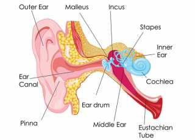

Acoustics Is A Branch Of Physics That Deals With The Study Of Mechanical Waves In Gases, Liquids, And Solids Including Topics Such As Vibration, Sound, Ultrasound And Infrasound.
Environmental Acoustics - Environmental Acoustics Is Concerned With Vibration And Noise Caused By Human Activities.
Musical Acoustics - Musical Acoustics Is Concerned With The Study Of The Physics Of Music.
Vibration And Dynamics - It Is The Study Of How Mechanical Systems Vibrate And Interact With Their Environment.
 \
\
InfraSound - InfraSound Is The Sound With A Frequency Less Than 20Hz.
UltraSound - UltraSound's Are The Sound's Greater Than the Human Audible Limit Which Is 20KHz.
Audible Frequencies - Sound Waves With Frequency Ranging From 20 Hz To 20 kHz Is Known Are Audible Sound.


Outer Ear - Collects Sound And Transfers To Middle Ear.
The EarDrum Vibrates The Incoming Sound Waves And Sends These Vibrations To Three Tiny Bones In The Middle Ear.
Middle Ear - The Bones In the Middle Ear Amplify Or Increse The Sound Vibrations And Send Them to Cochlea.
Inner Ear - Converts These Vibrations To Nerve Impulses Which Are Taken Up To The Brain To Be Interpreted.
